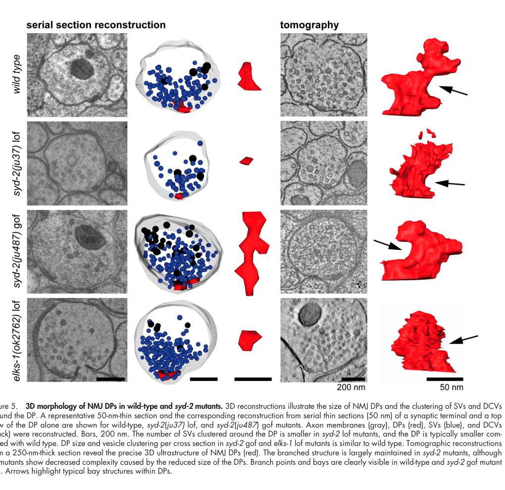

ELKS-1 is the single Caenorhabditis elegans member of the ELKS/CAST/ERC family of presynaptic active-zone proteins. It is a long coiled-coil protein that terminates in a conserved Ile-Trp-Ala PDZ-binding motif through which it binds the PDZ domain of UNC-10/RIM, and it is concentrated in discrete puncta at active zones throughout the nervous system, strongly colocalized with RIM. In C. elegans, ELKS-1 acts as an auxiliary component of the active-zone scaffold - it contributes to, but is not required for, the synaptic targeting of RIM, and animals lacking ELKS-1 have normal locomotion, normal sensitivity to acetylcholinesterase inhibitors and normal synaptic physiology, in contrast to the severe release defects of RIM mutants. ELKS-1 also stains structures outside the nervous system.
| GO Term | Evidence | Action | Reason |
|---|---|---|---|
|
GO:0005604
basement membrane
|
IDA
PMID:15976086 Redundant localization mechanisms of RIM and ELKS in Caenorh... |
KEEP AS NON CORE |
Summary: Antibody staining of ELKS-1 outside the nervous system underlies this location; within the nervous system the staining is restricted to synapse-rich regions.
Reason: The cited paper qualifies its description with "In the nervous system", implying additional extra-neuronal staining, which is consistent with a basement-membrane signal seen by the curator. The functional site of ELKS-1 is nevertheless the presynaptic active zone, and no function has been attributed to the extra-neuronal pool, so the location is retained as non-core rather than as part of the gene's core biology.
Supporting Evidence:
PMID:15976086
In the nervous system, ELKS staining was restricted to synapse-rich regions
|
|
GO:0008104
intracellular protein localization
|
IMP
PMID:15976086 Redundant localization mechanisms of RIM and ELKS in Caenorh... |
KEEP AS NON CORE |
Summary: ELKS-1 contributes to the synaptic localization of RIM - a minimal RIM PDZ+C2A construct requires ELKS-1 for targeting - but full-length RIM localizes normally in elks-1 nulls, so the contribution is redundant with another, unidentified interaction.
Reason: The paper's own conclusion is that ELKS-1 plays a real but non-essential role in localizing RIM, acting redundantly. The annotation is therefore justified but describes an accessory activity rather than a core function, and the term is also broader than the active-zone-specific observation that supports it.
Supporting Evidence:
PMID:15976086
These data suggest that ELKS plays a role, but not an essential role
PMID:15976086
These data demonstrate that ELKS is not required for localizing RIM or UNC-13 to the active zone in vivo
|
|
GO:0030165
PDZ domain binding
|
IPI
PMID:15976086 Redundant localization mechanisms of RIM and ELKS in Caenorh... |
ACCEPT |
Summary: The C-terminal 126 residues of ELKS-1, which carry the conserved Ile-Trp-Ala PDZ-binding motif, bind a GST fusion of the RIM PDZ domain but not GST alone.
Reason: A specific, well-supported molecular function and the mechanistic basis of ELKS-1's association with the RIM-containing active-zone scaffold; the interaction is conserved from mammals.
Supporting Evidence:
PMID:15976086
the ELKS protein bound to GST-PDZ
PMID:15976086
Mammalian RIM and ELKS proteins directly interact through the PDZ domain of RIM and the last three amino acids of ELKS
|
|
GO:0048786
presynaptic active zone
|
IDA
PMID:15976086 Redundant localization mechanisms of RIM and ELKS in Caenorh... |
ACCEPT |
Summary: ELKS-1 immunostaining forms discrete puncta at synapse-rich regions of the nerve ring and both nerve cords, more punctate than the vesicle marker RAB-3 and colocalized with RIM.
Reason: This is the core cellular location of the protein, established directly in C. elegans.
Supporting Evidence:
PMID:15976086
Immunocytochemistry revealed that ELKS staining is found in discrete puncta in the nerve ring and along both the ventral and dorsal cords
PMID:15976086
we found that RIM and ELKS are strongly colocalized throughout the C. elegans nervous system
|
|
GO:0048790
maintenance of presynaptic active zone structure
|
IBA
GO_REF:0000033 |
KEEP AS NON CORE |
Summary: Maintenance of active-zone structure inferred at the ELKS/CAST family node from vertebrate CAST/ERC scaffold data.
Reason: Family membership makes a scaffolding contribution plausible, and the node placement is not contradicted; but in C. elegans, elks-1 deletion leaves behaviour, synaptic physiology and the localization of RIM and UNC-13 intact, so any structural-maintenance role is auxiliary rather than core. The worm protein is best described as an auxiliary active-zone scaffold.
Propagation Review
Root cause:
NO FAILURE NON CORE
Failure modes:
FUNCTIONAL DIVERGENCE
Sources checked:
PANTHER:PTN000429274
· ELKS/CAST family ancestral node
SUPPORTS TRANSFER
The family-level scaffold assertion transfers, but the worm ortholog is dispensable for release and for the localization of other active-zone proteins, so the term describes an accessory rather than core contribution. Node id taken from the elks-1 GOA row for this term.
Supporting Evidence:
PMID:15976086
Our data indicate that ELKS acts as an auxiliary scaffolding protein at the active zone
PMID:15976086
These data demonstrate that ELKS is not required for localizing RIM or UNC-13 to the active zone in vivo
file:worm/elks-1/elks-1-deep-research-falcon.md
In *elks-1;syd-2* double mutants, residual UNC-2 clustering is reduced beyond that in *syd-2* alone, indicating an ELKS-1-dependent, SYD-2-independent route.
|
|
GO:0060625
regulation of protein deneddylation
|
IGI
PMID:19528325 Using RNA interference to identify specific modifiers of a t... |
MARK AS OVER ANNOTATED |
Summary: RNAi depletion of elks-1 suppressed the embryonic lethality of a temperature-sensitive rfl-1 (Nedd8 E1) mutant and partially restored CUL-3 neddylation, which the authors interpret as elks-1 normally opposing neddylation.
Reason: The evidence is a genetic modifier relationship in early embryos, and the authors state explicitly that the mechanism is not apparent and may be indirect. There is no evidence that ELKS-1, a neuronal active-zone scaffold, acts on the deneddylation machinery, and the term asserts regulation of a biochemical process it has not been shown to touch. Retained as a recorded genetic interaction, flagged as over-annotation.
Supporting Evidence:
PMID:19528325
We observed partial restoration of CUL-3 neddylation reproducibly after depletion of six of the nine specific suppressors: most clearly with elks-1
PMID:19528325
Their influence on neddylation could be direct and of importance to other processes that involve neddylation, or it could be indirect
|
|
GO:0098793
presynapse
|
IEA
GO_REF:0000044 |
ACCEPT |
Summary: Electronic presynapse annotation from the UniProt subcellular-location mapping.
Reason: Consistent with the direct worm immunolocalization to presynaptic active zones, though less specific than the IDA.
Supporting Evidence:
file:worm/elks-1/elks-1-uniprot.txt
SUBCELLULAR LOCATION: Presynapse
|
|
GO:0098831
presynaptic active zone cytoplasmic component
|
IBA
GO_REF:0000033 |
ACCEPT |
Summary: Assignment to the cytoplasmic component of the presynaptic active zone, inferred at the ELKS/CAST family node.
Reason: Correct for a coiled-coil protein with no membrane anchor that is concentrated at presynaptic densities; consistent with the worm immunostaining and with the protein remaining insoluble in Triton X-100 extracts.
Supporting Evidence:
PMID:18721860
neither UNC-10(Rim) nor the active zone-associated protein ELKS-1 was solubilized in Triton-X100
PMID:15976086
Immunocytochemistry revealed that ELKS staining is found in discrete puncta in the nerve ring and along both the ventral and dorsal cords
file:worm/elks-1/elks-1-deep-research-falcon.md
Endogenous CRISPR-tagged ELKS-1 forms puncta at presynaptic active zones, placing its site of action on the cytoplasmic face of the presynaptic membrane
|
|
GO:0098882
structural constituent of presynaptic active zone
|
IBA
GO_REF:0000033 |
ACCEPT |
Summary: Structural constituent of the presynaptic active zone, inferred at the ELKS/CAST family node; ELKS-1 is a coiled-coil scaffold that binds the RIM PDZ domain and is an insoluble resident of worm active zones.
Reason: This is the best available molecular-function description for ELKS-1 - it has no catalytic activity, it is an integral structural component of the active-zone cytomatrix, and its one demonstrated worm interaction (RIM PDZ binding) is a scaffolding interaction. The assertion is about being a structural component, which the worm data support, and is not undermined by the protein being dispensable for release.
Supporting Evidence:
PMID:15976086
Our data indicate that ELKS acts as an auxiliary scaffolding protein at the active zone
PMID:15976086
the ELKS protein bound to GST-PDZ
file:worm/elks-1/elks-1-deep-research-falcon.md
ELKS-1 is a large, nonenzymatic, coiled-coil-rich **presynaptic active-zone scaffold/adaptor**.
|
Q: Does elks-1 become functionally important for release when other active-zone scaffolds (syd-2/liprin, rimb-1, cla-1) are removed, i.e. is the worm active zone buffered by redundancy rather than independent of ELKS-1?
Q: What is the identity and function of the non-neuronal ELKS-1 pool detected by antibody staining, and does it account for the basement-membrane annotation?
Experiment: High-pressure-freeze EM and electrophysiology of elks-1 single and elks-1;syd-2, elks-1;rimb-1 double mutants, with endogenous tagging of UNC-2, to test whether ELKS-1 contributes to calcium-channel clustering that is masked by redundancy in the single mutant.
The research report should be a detailed narrative explaining the function, biological processes, and localization of the gene product. Citations should be given for all claims.
You should prioritize authoritative reviews and primary scientific literature when conducting research. You can supplement
this with annotations you find in gene/protein databases, but these can be outdated or inaccurate.
We are specifically interested in the primary function of the gene - for enzymes, what reaction is catalyzed, and what is the substrate specificity? For transporters, what is the substrate? For structural proteins or adapters, what is the broader structural role? For signaling molecules, what is the role in the pathway.
We are interested in where in or outside the cell the gene product carries out its function.
We are also interested in the signaling or biochemical pathways in which the gene functions. We are less interested in broad pleiotropic effects, except where these elucidate the precise role.
Include evidence where possible. We are interested in both experimental evidence as well as inference from structure, evolution, or bioinformatic analysis. Precise studies should be prioritized over high-throughput, where available.
The requested identity is internally consistent: UniProt O44490 corresponds to the Caenorhabditis elegans locus elks-1 (F42A6.9), encoding an ELKS/CAST/ERC-family protein. Worm studies identify it as the ortholog of mammalian ERC2/ELKS and place it in the conserved presynaptic cytomatrix family; this agrees with the supplied ELKS/CAST (InterPro IPR019323) and Cast (Pfam PF10174) annotations. No conflicting literature on a different “ELKS-1” gene was used. (artan2021interactomeanalysisof pages 4-6, hendi2019intrinsicandextrinsic pages 3-4)
Primary functional annotation: ELKS-1 is a large, nonenzymatic, coiled-coil-rich presynaptic active-zone scaffold/adaptor. It helps assemble and organize the electron-dense active-zone cytomatrix, particularly through SYD-2/Liprin-α-dependent recruitment and condensate formation. It also makes a partly redundant contribution to concentrating UNC-2/CaV2 calcium channels near release sites. It is neither an enzyme nor a transporter; consequently, there is no catalytic reaction or transported substrate to annotate. (mcdonald2020assemblyofsynaptic pages 3-3, kittelmann2013liprinαsyd2determinesthe pages 1-2, oh2021unc2cav2channel pages 8-11, oh2021unc2cav2channel pages 1-5)
ELKS-1 belongs to the ELKS/CAST/ERC active-zone protein family. The name reflects the historically convergent identification of vertebrate homologs as ELKS, CAST, Rab6-interacting proteins, and ERC proteins. In C. elegans, endogenous-locus and orthology studies specifically associate elks-1/F42A6.9 with the mammalian ERC2/ELKS branch. (artan2021interactomeanalysisof pages 4-6)
The supplied domain assignments—ELKS/CAST and Cast—are consistent with the literature’s treatment of ELKS-1 as an elongated, interaction-rich scaffold. Such proteins rely principally on coiled-coil and low-complexity/multivalent regions rather than catalytic domains. Functional experiments support this interpretation: full-length ELKS-1 binds SYD-2/Liprin-α, participates in condensates, and organizes other active-zone components. There is no evidence that O44490 possesses enzymatic activity, binds a biochemical substrate in a catalytic sense, or transports a solute. (mcdonald2020assemblyofsynaptic pages 3-3, kittelmann2013liprinαsyd2determinesthe pages 6-8)
ELKS-1 is expressed broadly in the nervous system and is concentrated in synapse-rich regions, including the nerve ring. Endogenous CRISPR-tagged ELKS-1 forms puncta at presynaptic active zones, placing its site of action on the cytoplasmic face of the presynaptic membrane within the cytomatrix/dense projection. It is therefore an intracellular presynaptic protein—not an extracellular adhesion molecule, membrane transporter, or synaptic-vesicle cargo protein. (artan2021interactomeanalysisof pages 4-6, oh2021unc2cav2channel pages 8-11)
In developing dopaminergic axons, live imaging detects GFP-tagged ELKS-1 in growing axons and near growth cones, followed by rapid coalescence into nascent presynaptic sites. ELKS-1 localization is severely disrupted in hypomorphic unc-104/KIF1A mutants. Because the disruption is stronger than in syd-2 mutants, UNC-104-dependent axonal transport appears necessary for both SYD-2-dependent delivery and the residual SYD-2-independent localization of ELKS-1. This does not prove that ELKS-1 binds UNC-104 directly; ELKS-1 may travel in multiprotein active-zone precursor assemblies. (lipton2018axonaltransportand pages 46-48, lipton2018axonaltransportand pages 49-50, oh2021unc2cav2channel pages 8-11)
The best-defined molecular relationship is with SYD-2/Liprin-α. Pull-down, co-immunoprecipitation, and yeast two-hybrid experiments support binding between ELKS-1 and the N-terminal/LH1 region of SYD-2. The R184C gain-of-function form of SYD-2 recruits ELKS-1 more strongly than wild-type SYD-2, linking increased SYD-2 oligomerization to enhanced ELKS-1 incorporation into active zones. (kittelmann2013liprinαsyd2determinesthe pages 6-8, kittelmann2013liprinαsyd2determinesthe pages 8-9)
Electron microscopy and tomography show that SYD-2 controls the dimensions and higher-order polymerization of presynaptic dense projections. Loss of SYD-2 produces fewer, smaller projections with fewer nearby docked vesicles, whereas SYD-2 gain of function produces elongated projections. Critically, the gain-of-function enlargement requires ELKS-1: removing elks-1 from the SYD-2 gain-of-function background returns projection length toward wild type. Thus, ELKS-1 is an effector or building component recruited by activated/oligomerized SYD-2, rather than the sole initiator of active-zone formation. (kittelmann2013liprinαsyd2determinesthe pages 1-2, kittelmann2013liprinαsyd2determinesthe pages 6-8, kittelmann2013liprinαsyd2determinesthe pages 8-9)
The ultrastructural evidence also explains the deceptively mild elks-1 single-mutant phenotype. Two independent null alleles had dense-projection organization, vesicle docking, and basal transmission broadly similar to wild type; mean projection length in one null background was 198.2 ± 8.9 nm. The inspected three-dimensional reconstruction likewise shows an elks-1 loss-of-function terminal with approximately wild-type projection size and vesicle clustering. (kittelmann2013liprinαsyd2determinesthe pages 6-8, kittelmann2013liprinαsyd2determinesthe media a6c252ca)
By comparison, SYD-2 gain of function increased docked vesicles to 11.3 ± 1.6 per synapse versus 7.1 ± 0.6 in wild type (P=0.01); the associated projection elongation is ELKS-1-dependent. These measurements should not be misread as an elks-1 single-mutant phenotype—they quantify the SYD-2-driven structural state in which ELKS-1 becomes necessary. (kittelmann2013liprinαsyd2determinesthe pages 6-8, kittelmann2013liprinαsyd2determinesthe pages 8-9)
Purified full-length ELKS-1 and SYD-2 can form condensates, and in vivo work supports liquid–liquid phase separation during early active-zone assembly. An engineered ELKS-1 phase-separation-defective protein still localized to synapses and did not erase detectable presynaptic densities, but active-zone assembly was impaired and fewer synaptic vesicles were docked. The mechanistic conclusion is therefore specific: ELKS-1 condensation is important for the material properties and efficient maturation of the active zone, but not strictly required for ELKS-1 targeting or for formation of any density at all. (mcdonald2020assemblyofsynaptic pages 3-3, oh2021unc2cav2channel pages 11-14)
This reconciles two observations: complete elks-1 loss can be buffered by other active-zone scaffolds, while altering the biophysical behavior of ELKS-1 within an assembling scaffold can expose defects in vesicle incorporation and docking.
UNC-2 is the worm CaV2-family voltage-gated calcium channel that supplies the local calcium signal for synaptic-vesicle exocytosis. Endogenous tagging and quantitative live imaging show that UNC-10/RIM and SYD-2 are the dominant organizers of UNC-2 clusters. In contrast, elks-1 loss alone does not significantly reduce UNC-2 puncta, consistent with the mild basal phenotype. (oh2021unc2cav2channel pages 14-17, oh2021unc2cav2channel pages 1-5)
ELKS-1’s contribution becomes apparent in sensitized backgrounds:
Accordingly, ELKS-1 is best annotated as a secondary/redundant organizer of presynaptic CaV2 localization, embedded in a resilient multivalent network. A direct physical ELKS-1–UNC-2 interaction is plausible from homologous systems but has not been demonstrated directly in the worm evidence reviewed here. UNC-10/RIM remains the more consequential channel-positioning factor. (oh2021unc2cav2channel pages 11-14, oh2021unc2cav2channel pages 8-11)
Under matched imaging conditions for endogenously GFP-tagged proteins, ELKS-1 and SYD-2 puncta had approximately twice the fluorescence intensity of UNC-2 and UNC-10, whereas RIMB-1 was approximately fourfold brighter. These are useful relative-abundance estimates, but fluorophore intensity is not an absolute stoichiometric measurement and may also reflect oligomerization or differences in local molecular organization. (oh2021unc2cav2channel pages 8-11, oh2021unc2cav2channel pages 14-17)
ELKS-1 acts within the presynaptic active-zone assembly and neurotransmitter-release pathway:
Endogenous ELKS-1–TurboID proximity labeling enriched UNC-10/RIM, SYD-1, SYD-2/Liprin-α, and SAD-family proteins from intact worms. This provides strong in vivo evidence for the active-zone molecular neighborhood. It does not establish that every enriched protein binds ELKS-1 directly; proximity proteomics reports spatial proximity and shared complexes. (artan2021interactomeanalysisof pages 4-6)
Recent analysis of CLA-1 illustrates the same network architecture. CLA-1 is important for RIMB-1 localization, while SYD-2 and ELKS-1 may provide alternative routes that retain RIMB-1 at active zones when CLA-1 and UNC-10 are absent. The ELKS-1 role in this specific compensation is a mechanistic proposal rather than a demonstrated direct interaction. (krout2023c.elegansclarinetcla1 pages 5-7, krout2023c.elegansclarinetcla1 pages 3-5)
A major 2024 advance placed elks-1 within a transcriptional program for dopaminergic synaptogenesis. Whole-animal ChIP-seq and neuron-specific NanoDam indicated occupancy of elks-1 regulatory DNA by EGL-43/MECOM. Genome editing of a candidate upstream EGL-43 motif from 5′-AAAAGATAA-3′ to 5′-AACCCCCCC-3′ reduced elks-1 RNA and ELKS-1 fluorescence in PDE dopaminergic axons. The motif mutation had a weaker effect than EGL-43 depletion, implying additional cis-elements, indirect targets, or combinatorial regulation. This connects activity-responsive transcription to the abundance of a core active-zone scaffold. Published August 2024 in Nature Neuroscience: https://doi.org/10.1038/s41593-024-01728-x. (yee2024anactivityregulatedtranscriptional pages 5-6)
A 2023 study of CLA-1/Clarinet used endogenous ELKS-1 as an active-zone integrity marker while resolving the hierarchy among CLA-1, RIMB-1, UNC-10/RIM, and UNC-2/CaV2. Its main ELKS-1 implication is that the worm active zone contains multiple compensatory localization routes, rather than a simple linear pathway. Published May 2023 in PNAS: https://doi.org/10.1073/pnas.2220856120. (krout2023c.elegansclarinetcla1 pages 5-7, krout2023c.elegansclarinetcla1 pages 3-5)
A 2024 PNAS study showed that UNC-2 abundance is inversely coupled to synaptic-vesicle exocytosis: impaired exocytosis elevates UNC-2 levels, whereas sustained optogenetic activation for more than two hours reduces channel abundance without reducing punctum number. ELKS-1 was used as an active-zone comparator rather than shown to mediate this homeostatic feedback. The work expands the functional context in which ELKS-1-marked active zones regulate channel abundance, but it should not be cited as proof that ELKS-1 itself senses activity. Published August 2024: https://doi.org/10.1073/pnas.2404969121. (xiong2024presynapticneuronsselftune pages 3-4, xiong2024presynapticneuronsselftune pages 4-5)
ELKS-1 currently has research applications, not clinical or therapeutic applications:
These tools make ELKS-1 particularly useful for dissecting active-zone assembly in vivo without relying solely on overexpressed transgenes. Endogenous tagging is important because overexpression can mask defects supported by redundant, lower-affinity interactions. (artan2021interactomeanalysisof pages 4-6, oh2021unc2cav2channel pages 11-14, oh2021unc2cav2channel pages 14-17)
The evidence is summarized below.
| Evidence area | Worm-specific finding | Evidence type/model | Interpretation/caveat | Key source with year and DOI URL |
|---|---|---|---|---|
| Identity/family | elks-1 encodes a C. elegans ELKS/CAST/ERC-family protein and is the worm ortholog of mammalian ERC2/ELKS; the target is elks-1/F42A6.9 (UniProt O44490), not a similarly named non-worm gene. | Endogenous locus annotation, orthology, and worm synaptic-protein studies | Consistent with the supplied ELKS/CAST (IPR019323) and Cast (PF10174) domain annotations. ELKS-1 is a scaffold, not an enzyme or transporter; mammalian phenotypes cannot automatically be assigned to the worm protein. | Artan et al., 2021, 10.1016/j.jbc.2021.101094; Hendi et al., 2019, 10.1007/s00018-019-03109-1 (artan2021interactomeanalysisof pages 4-6, hendi2019intrinsicandextrinsic pages 3-4) |
| Presynaptic localization | Endogenously tagged ELKS-1 is enriched in the nerve ring and other synapse-rich regions and forms puncta at presynaptic active zones; it is used experimentally as an active-zone marker. | CRISPR knock-in fluorescence, live-animal imaging, and synaptic proximity labeling | Strong evidence for intracellular localization at the presynaptic cytomatrix/dense projection rather than on synaptic vesicles or outside the cell. | Artan et al., 2021, 10.1016/j.jbc.2021.101094; Oh et al., 2021, 10.1523/JNEUROSCI.2371-20.2021 (artan2021interactomeanalysisof pages 4-6, oh2021unc2cav2channel pages 8-11, oh2021unc2cav2channel pages 1-5) |
| SYD-2 interaction and dense-projection assembly | ELKS-1 binds SYD-2/Liprin-α; the SYD-2 R184C gain-of-function protein recruits ELKS-1 more strongly through its LH1-containing N terminus. ELKS-1 is required for SYD-2 gain-of-function to elongate dense projections, whereas elks-1 null synapses alone have near-wild-type dense-projection length (198.2 ± 8.9 nm), vesicle docking, and transmission. | Null and double-mutant genetics, high-pressure-freezing EM/tomography, pull-down, co-immunoprecipitation, and yeast two-hybrid assays | Directly supports a structural adaptor role in SYD-2-driven dense-projection polymerization. The mild single-null phenotype shows that ELKS-1 is conditionally important and buffered by redundant active-zone interactions. | Kittelmann et al., 2013, 10.1083/jcb.201302022 (kittelmann2013liprinαsyd2determinesthe pages 1-2, kittelmann2013liprinαsyd2determinesthe pages 6-8, kittelmann2013liprinαsyd2determinesthe pages 8-9, kittelmann2013liprinαsyd2determinesthe media a6c252ca) |
| Phase separation | Full-length ELKS-1 and SYD-2 form condensates; an ELKS-1 phase-separation-defective construct can still localize and leave detectable presynaptic densities but impairs active-zone assembly and reduces docked vesicles. | Purified-protein condensate and FRAP assays combined with engineered worm mutants and ultrastructure | Indicates that condensate fluidity contributes to efficient incorporation and organization of active-zone material rather than merely targeting ELKS-1 to synapses. | McDonald et al., 2020, 10.1038/s41586-020-2942-0 (mcdonald2020assemblyofsynaptic pages 3-3, oh2021unc2cav2channel pages 11-14) |
| UNC-2/CaV2 localization and redundancy | elks-1 loss alone does not significantly alter endogenous UNC-2 clusters, but ELKS-1 contributes when other scaffolds are absent: UNC-2 is further reduced in elks-1;syd-2 animals and in unc-10;rimb-1;elks-1 triple mutants. ELKS-1 puncta have about twice the GFP intensity of UNC-2 or UNC-10 under matched imaging conditions. | Endogenous CRISPR-tagged proteins; single, double, and triple mutants; quantitative live imaging of dorsal-cord synapses | ELKS-1 is a secondary or redundant organizer of CaV2-channel clustering, not the dominant tether. A direct worm ELKS-1–UNC-2 physical interaction remains possible but unproven; UNC-10/RIM and SYD-2 have larger effects. Relative fluorescence is an abundance proxy, not an absolute molecular stoichiometry. | Oh et al., 2021, 10.1523/JNEUROSCI.2371-20.2021 (oh2021unc2cav2channel pages 8-11, oh2021unc2cav2channel pages 1-5) |
| Axonal transport via UNC-104 | Presynaptic localization of ELKS-1 is strongly disrupted in hypomorphic unc-104/KIF1A mutants; ELKS-1 puncta are fewer than in syd-2 mutants, indicating that both SYD-2-dependent and residual SYD-2-independent ELKS-1 delivery require UNC-104. | Live imaging of endogenous or fluorescently tagged active-zone proteins in transport mutants | Supports transport of ELKS-1-containing active-zone material into axons, but does not establish direct binding between ELKS-1 and UNC-104 or prove that ELKS-1 is carried as an isolated cargo. | Lipton et al., 2018, 10.1016/j.celrep.2018.07.096; Oh et al., 2021, 10.1523/JNEUROSCI.2371-20.2021 (lipton2018axonaltransportand pages 46-48, lipton2018axonaltransportand pages 49-50, oh2021unc2cav2channel pages 8-11) |
| Endogenous proximity proteomics | CRISPR-tagged ELKS-1::TurboID–mNeonGreen enriched established presynaptic proteins, including UNC-10/RIM, SYD-1, SYD-2/Liprin-α, and SAD-family proteins, from intact worms. | Endogenous TurboID proximity labeling, streptavidin purification, and mass spectrometry | Confirms ELKS-1’s molecular neighborhood in vivo. Proximity labeling demonstrates nanoscale proximity, not necessarily direct binary binding; whole-animal western blots did not show a strong global increase in biotinylation. | Artan et al., 2021, 10.1016/j.jbc.2021.101094 (artan2021interactomeanalysisof pages 4-6) |
| EGL-43 transcriptional regulation (2024) | EGL-43/MECOM occupies elks-1 regulatory regions. Changing a candidate upstream EGL-43 motif from 5′-AAAAGATAA-3′ to 5′-AACCCCCCC-3′ reduced elks-1 transcript abundance and ELKS-1 fluorescence in PDE dopaminergic axons. | Whole-animal ChIP-seq, dopaminergic-neuron NanoDam, cis-regulatory genome editing, transcript measurement, and endogenous protein imaging | Directly places elks-1 in an activity-regulated synaptogenesis program. The motif mutation had a weaker effect than EGL-43 depletion, implying additional binding sites, indirect targets, or combinatorial regulation. | Yee et al., 2024, 10.1038/s41593-024-01728-x (yee2024anactivityregulatedtranscriptional pages 5-6) |
| 2023–2024 applications | ELKS-1 serves as an endogenous reference marker for mapping active-zone hierarchy, testing CLA-1/RIMB-1 relationships, measuring CaV2 homeostasis, and visualizing cell-specific synapses. A 2024 split-fluorophore toolkit introduced tandem GFP₁₁/wrmScarlet₁₁ tags at the endogenous elks-1 locus for neuron-specific complementation. | CRISPR endogenous tagging, quantitative microscopy, genetic epistasis, electrophysiology, optogenetics, and split-fluorescent-protein engineering | These are research implementations rather than clinical applications. In the 2023 CLA-1 study, ELKS-1 mainly served as an active-zone integrity marker; the 2024 CaV2 study used ELKS-1 as an abundance comparator, so neither by itself establishes a new ELKS-1-specific mechanism. | Krout et al., 2023, 10.1073/pnas.2220856120; Xiong et al., 2024, 10.1073/pnas.2404969121; Kurashina et al., 2024 preprint, 10.1101/2024.07.29.605690 (xiong2024presynapticneuronsselftune pages 3-4, krout2023c.elegansclarinetcla1 pages 5-7, krout2023c.elegansclarinetcla1 pages 3-5) |
Table: This table integrates direct worm-specific evidence for ELKS-1 identity, localization, structural and channel-organizing roles, regulation, and experimental uses. It separates demonstrated mechanisms from redundancy-based or cross-species inference.
The collective evidence favors a distributed-scaffold model. ELKS-1 is a genuine structural component of the active zone, but not an indispensable solitary organizer under standard conditions. Its mild null phenotype should not be interpreted as lack of function. Rather, biochemical binding, ELKS-dependent SYD-2 gain-of-function remodeling, condensate-defective phenotypes, and synthetic channel-localization defects show that its role is buffered by UNC-10/RIM, SYD-2/Liprin-α, RIMB-1, CLA-1, and other multivalent partners. This interpretation is consistent with the general observation that deleting one active-zone component often produces modest effects, whereas compound perturbations reveal severe organizational defects. (oh2021unc2cav2channel pages 11-14, oh2021unc2cav2channel pages 8-11, oh2021unc2cav2channel pages 1-5)
Mammalian ELKS proteins can support presynaptic calcium influx, and simultaneous ELKS1/ELKS2 removal in cultured inhibitory hippocampal neurons reduces release by about 50% and single-action-potential-triggered calcium influx by about 30%. Those results are valuable evolutionary context, but they are not direct evidence for the phenotype of O44490 in C. elegans. Worm-specific annotation should remain centered on the strong structural, localization, phase-separation, and genetic-redundancy evidence summarized above. Mammalian study published September 2014: https://doi.org/10.1523/JNEUROSCI.0999-14.2014. (liu2014theactivezone pages 3-4)
References
(artan2021interactomeanalysisof pages 4-6): Murat Artan, Stephen Barratt, Sean M. Flynn, Farida Begum, Mark Skehel, Armel Nicolas, and Mario de Bono. Interactome analysis of caenorhabditis elegans synapses by turboid-based proximity labeling. Sep 2021. URL: https://doi.org/10.1016/j.jbc.2021.101094, doi:10.1016/j.jbc.2021.101094. This article has 80 citations and is from a domain leading peer-reviewed journal.
(hendi2019intrinsicandextrinsic pages 3-4): Ardalan Hendi, Mizuki Kurashina, and Kota Mizumoto. Intrinsic and extrinsic mechanisms of synapse formation and specificity in c. elegans. Cellular and Molecular Life Sciences, 76:2719-2738, Apr 2019. URL: https://doi.org/10.1007/s00018-019-03109-1, doi:10.1007/s00018-019-03109-1. This article has 30 citations and is from a domain leading peer-reviewed journal.
(mcdonald2020assemblyofsynaptic pages 3-3): Nathan A. McDonald, Richard D. Fetter, and Kang Shen. Assembly of synaptic active zones requires phase separation of scaffold molecules. Nature, 588:454-458, Nov 2020. URL: https://doi.org/10.1038/s41586-020-2942-0, doi:10.1038/s41586-020-2942-0. This article has 186 citations and is from a highest quality peer-reviewed journal.
(kittelmann2013liprinαsyd2determinesthe pages 1-2): Maike Kittelmann, Jan Hegermann, Alexandr Goncharov, Hidenori Taru, Mark H. Ellisman, Janet E. Richmond, Yishi Jin, and Stefan Eimer. Liprin-α/syd-2 determines the size of dense projections in presynaptic active zones in c. elegans. The Journal of Cell Biology, 203:849-863, Dec 2013. URL: https://doi.org/10.1083/jcb.201302022, doi:10.1083/jcb.201302022. This article has 89 citations.
(oh2021unc2cav2channel pages 8-11): Kelly H. Oh, Mia Krout, Janet E. Richmond, and Hongkyun Kim. Unc-2 cav2 channel localization at presynaptic active zones depends on unc-10/rim and syd-2/liprin-α in caenorhabditis elegans. The Journal of Neuroscience, 41:4782-4794, Jan 2021. URL: https://doi.org/10.1101/2021.01.27.428454, doi:10.1101/2021.01.27.428454. This article has 38 citations.
(oh2021unc2cav2channel pages 1-5): Kelly H. Oh, Mia Krout, Janet E. Richmond, and Hongkyun Kim. Unc-2 cav2 channel localization at presynaptic active zones depends on unc-10/rim and syd-2/liprin-α in caenorhabditis elegans. The Journal of Neuroscience, 41:4782-4794, Jan 2021. URL: https://doi.org/10.1101/2021.01.27.428454, doi:10.1101/2021.01.27.428454. This article has 38 citations.
(kittelmann2013liprinαsyd2determinesthe pages 6-8): Maike Kittelmann, Jan Hegermann, Alexandr Goncharov, Hidenori Taru, Mark H. Ellisman, Janet E. Richmond, Yishi Jin, and Stefan Eimer. Liprin-α/syd-2 determines the size of dense projections in presynaptic active zones in c. elegans. The Journal of Cell Biology, 203:849-863, Dec 2013. URL: https://doi.org/10.1083/jcb.201302022, doi:10.1083/jcb.201302022. This article has 89 citations.
(lipton2018axonaltransportand pages 46-48): David M. Lipton, Celine I. Maeder, and Kang Shen. Axonal transport and active zone proteins regulate volume transmitting dopaminergic synapse formation. bioRxiv, Mar 2018. URL: https://doi.org/10.1101/284042, doi:10.1101/284042. This article has 2 citations.
(lipton2018axonaltransportand pages 49-50): David M. Lipton, Celine I. Maeder, and Kang Shen. Axonal transport and active zone proteins regulate volume transmitting dopaminergic synapse formation. bioRxiv, Mar 2018. URL: https://doi.org/10.1101/284042, doi:10.1101/284042. This article has 2 citations.
(kittelmann2013liprinαsyd2determinesthe pages 8-9): Maike Kittelmann, Jan Hegermann, Alexandr Goncharov, Hidenori Taru, Mark H. Ellisman, Janet E. Richmond, Yishi Jin, and Stefan Eimer. Liprin-α/syd-2 determines the size of dense projections in presynaptic active zones in c. elegans. The Journal of Cell Biology, 203:849-863, Dec 2013. URL: https://doi.org/10.1083/jcb.201302022, doi:10.1083/jcb.201302022. This article has 89 citations.
(kittelmann2013liprinαsyd2determinesthe media a6c252ca): Maike Kittelmann, Jan Hegermann, Alexandr Goncharov, Hidenori Taru, Mark H. Ellisman, Janet E. Richmond, Yishi Jin, and Stefan Eimer. Liprin-α/syd-2 determines the size of dense projections in presynaptic active zones in c. elegans. The Journal of Cell Biology, 203:849-863, Dec 2013. URL: https://doi.org/10.1083/jcb.201302022, doi:10.1083/jcb.201302022. This article has 89 citations.
(oh2021unc2cav2channel pages 11-14): Kelly H. Oh, Mia Krout, Janet E. Richmond, and Hongkyun Kim. Unc-2 cav2 channel localization at presynaptic active zones depends on unc-10/rim and syd-2/liprin-α in caenorhabditis elegans. The Journal of Neuroscience, 41:4782-4794, Jan 2021. URL: https://doi.org/10.1101/2021.01.27.428454, doi:10.1101/2021.01.27.428454. This article has 38 citations.
(oh2021unc2cav2channel pages 14-17): Kelly H. Oh, Mia Krout, Janet E. Richmond, and Hongkyun Kim. Unc-2 cav2 channel localization at presynaptic active zones depends on unc-10/rim and syd-2/liprin-α in caenorhabditis elegans. The Journal of Neuroscience, 41:4782-4794, Jan 2021. URL: https://doi.org/10.1101/2021.01.27.428454, doi:10.1101/2021.01.27.428454. This article has 38 citations.
(krout2023c.elegansclarinetcla1 pages 5-7): Mia Krout, Kelly H. Oh, Ame Xiong, Elisa B. Frankel, Peri T. Kurshan, Hongkyun Kim, and Janet E. Richmond. C. elegans clarinet/cla-1 recruits rimb-1/rim-binding protein and unc-13 to orchestrate presynaptic neurotransmitter release. Proceedings of the National Academy of Sciences of the United States of America, May 2023. URL: https://doi.org/10.1073/pnas.2220856120, doi:10.1073/pnas.2220856120. This article has 9 citations and is from a highest quality peer-reviewed journal.
(krout2023c.elegansclarinetcla1 pages 3-5): Mia Krout, Kelly H. Oh, Ame Xiong, Elisa B. Frankel, Peri T. Kurshan, Hongkyun Kim, and Janet E. Richmond. C. elegans clarinet/cla-1 recruits rimb-1/rim-binding protein and unc-13 to orchestrate presynaptic neurotransmitter release. Proceedings of the National Academy of Sciences of the United States of America, May 2023. URL: https://doi.org/10.1073/pnas.2220856120, doi:10.1073/pnas.2220856120. This article has 9 citations and is from a highest quality peer-reviewed journal.
(yee2024anactivityregulatedtranscriptional pages 5-6): Callista Yee, Yutong Xiao, Hongwen Chen, Anay R. Reddy, Bing Xu, Taylor N. Medwig-Kinney, Wan Zhang, Alan P. Boyle, Wendy A. Herbst, Yang Kevin Xiang, David Q. Matus, and Kang Shen. An activity-regulated transcriptional program directly drives synaptogenesis. Nature Neuroscience, 27:1695-1707, Aug 2024. URL: https://doi.org/10.1038/s41593-024-01728-x, doi:10.1038/s41593-024-01728-x. This article has 24 citations and is from a highest quality peer-reviewed journal.
(xiong2024presynapticneuronsselftune pages 3-4): Ame Xiong, Janet E. Richmond, and Hongkyun Kim. Presynaptic neurons self-tune by inversely coupling neurotransmitter release with the abundance of cav2 voltage-gated ca2+ channels. Proceedings of the National Academy of Sciences of the United States of America, Aug 2024. URL: https://doi.org/10.1073/pnas.2404969121, doi:10.1073/pnas.2404969121. This article has 5 citations and is from a highest quality peer-reviewed journal.
(xiong2024presynapticneuronsselftune pages 4-5): Ame Xiong, Janet E. Richmond, and Hongkyun Kim. Presynaptic neurons self-tune by inversely coupling neurotransmitter release with the abundance of cav2 voltage-gated ca2+ channels. Proceedings of the National Academy of Sciences of the United States of America, Aug 2024. URL: https://doi.org/10.1073/pnas.2404969121, doi:10.1073/pnas.2404969121. This article has 5 citations and is from a highest quality peer-reviewed journal.
(liu2014theactivezone pages 3-4): Changliang Liu, Lydia S. Bickford, Richard G. Held, Hajnalka Nyitrai, Thomas C. Südhof, and Pascal S. Kaeser. The active zone protein family elks supports ca2+ influx at nerve terminals of inhibitory hippocampal neurons. The Journal of Neuroscience, 34:12289-12303, Sep 2014. URL: https://doi.org/10.1523/jneurosci.0999-14.2014, doi:10.1523/jneurosci.0999-14.2014. This article has 84 citations.

id: O44490
gene_symbol: elks-1
product_type: PROTEIN
status: COMPLETE
taxon:
id: NCBITaxon:6239
label: Caenorhabditis elegans
description: ELKS-1 is the single Caenorhabditis elegans member of the ELKS/CAST/ERC family of presynaptic
active-zone proteins. It is a long coiled-coil protein that terminates in a conserved Ile-Trp-Ala PDZ-binding
motif through which it binds the PDZ domain of UNC-10/RIM, and it is concentrated in discrete puncta
at active zones throughout the nervous system, strongly colocalized with RIM. In C. elegans, ELKS-1
acts as an auxiliary component of the active-zone scaffold - it contributes to, but is not required
for, the synaptic targeting of RIM, and animals lacking ELKS-1 have normal locomotion, normal sensitivity
to acetylcholinesterase inhibitors and normal synaptic physiology, in contrast to the severe release
defects of RIM mutants. ELKS-1 also stains structures outside the nervous system.
existing_annotations:
- term:
id: GO:0005604
label: basement membrane
evidence_type: IDA
original_reference_id: PMID:15976086
qualifier: located_in
review:
summary: Antibody staining of ELKS-1 outside the nervous system underlies this location; within the
nervous system the staining is restricted to synapse-rich regions.
action: KEEP_AS_NON_CORE
reason: The cited paper qualifies its description with "In the nervous system", implying additional
extra-neuronal staining, which is consistent with a basement-membrane signal seen by the curator.
The functional site of ELKS-1 is nevertheless the presynaptic active zone, and no function has been
attributed to the extra-neuronal pool, so the location is retained as non-core rather than as part
of the gene's core biology.
supported_by:
- reference_id: PMID:15976086
supporting_text: In the nervous system, ELKS staining was restricted to synapse-rich regions
- term:
id: GO:0008104
label: intracellular protein localization
evidence_type: IMP
original_reference_id: PMID:15976086
qualifier: involved_in
review:
summary: ELKS-1 contributes to the synaptic localization of RIM - a minimal RIM PDZ+C2A construct
requires ELKS-1 for targeting - but full-length RIM localizes normally in elks-1 nulls, so the contribution
is redundant with another, unidentified interaction.
action: KEEP_AS_NON_CORE
reason: The paper's own conclusion is that ELKS-1 plays a real but non-essential role in localizing
RIM, acting redundantly. The annotation is therefore justified but describes an accessory activity
rather than a core function, and the term is also broader than the active-zone-specific observation
that supports it.
supported_by:
- reference_id: PMID:15976086
supporting_text: These data suggest that ELKS plays a role, but not an essential role
- reference_id: PMID:15976086
supporting_text: These data demonstrate that ELKS is not required for localizing RIM or UNC-13 to
the active zone in vivo
- term:
id: GO:0030165
label: PDZ domain binding
evidence_type: IPI
original_reference_id: PMID:15976086
qualifier: enables
supporting_entities:
- WB:WBGene00006750
review:
summary: The C-terminal 126 residues of ELKS-1, which carry the conserved Ile-Trp-Ala PDZ-binding
motif, bind a GST fusion of the RIM PDZ domain but not GST alone.
action: ACCEPT
reason: A specific, well-supported molecular function and the mechanistic basis of ELKS-1's association
with the RIM-containing active-zone scaffold; the interaction is conserved from mammals.
supported_by:
- reference_id: PMID:15976086
supporting_text: the ELKS protein bound to GST-PDZ
- reference_id: PMID:15976086
supporting_text: Mammalian RIM and ELKS proteins directly interact through the PDZ domain of RIM
and the last three amino acids of ELKS
- term:
id: GO:0048786
label: presynaptic active zone
evidence_type: IDA
original_reference_id: PMID:15976086
qualifier: located_in
review:
summary: ELKS-1 immunostaining forms discrete puncta at synapse-rich regions of the nerve ring and
both nerve cords, more punctate than the vesicle marker RAB-3 and colocalized with RIM.
action: ACCEPT
reason: This is the core cellular location of the protein, established directly in C. elegans.
supported_by:
- reference_id: PMID:15976086
supporting_text: Immunocytochemistry revealed that ELKS staining is found in discrete puncta in
the nerve ring and along both the ventral and dorsal cords
- reference_id: PMID:15976086
supporting_text: we found that RIM and ELKS are strongly colocalized throughout the C. elegans nervous
system
- term:
id: GO:0048790
label: maintenance of presynaptic active zone structure
evidence_type: IBA
original_reference_id: GO_REF:0000033
qualifier: involved_in
supporting_entities:
- FB:FBgn0259246
- PANTHER:PTN000429274
review:
summary: Maintenance of active-zone structure inferred at the ELKS/CAST family node from vertebrate
CAST/ERC scaffold data.
action: KEEP_AS_NON_CORE
reason: Family membership makes a scaffolding contribution plausible, and the node placement is not
contradicted; but in C. elegans, elks-1 deletion leaves behaviour, synaptic physiology and the localization
of RIM and UNC-13 intact, so any structural-maintenance role is auxiliary rather than core. The
worm protein is best described as an auxiliary active-zone scaffold.
propagation_review:
root_cause: NO_FAILURE_NON_CORE
failure_modes:
- FUNCTIONAL_DIVERGENCE
source_entities:
- source_id: PANTHER:PTN000429274
source_label: ELKS/CAST family ancestral node
source_status: SUPPORTS_TRANSFER
comment: The family-level scaffold assertion transfers, but the worm ortholog is dispensable for
release and for the localization of other active-zone proteins, so the term describes an accessory
rather than core contribution. Node id taken from the elks-1 GOA row for this term.
supported_by:
- reference_id: PMID:15976086
supporting_text: Our data indicate that ELKS acts as an auxiliary scaffolding protein at the active
zone
- reference_id: PMID:15976086
supporting_text: These data demonstrate that ELKS is not required for localizing RIM or UNC-13 to
the active zone in vivo
- reference_id: file:worm/elks-1/elks-1-deep-research-falcon.md
supporting_text: In *elks-1;syd-2* double mutants, residual UNC-2 clustering is reduced beyond that
in *syd-2* alone, indicating an ELKS-1-dependent, SYD-2-independent route.
- term:
id: GO:0060625
label: regulation of protein deneddylation
evidence_type: IGI
original_reference_id: PMID:19528325
qualifier: involved_in
supporting_entities:
- WB:WBGene00004341
review:
summary: RNAi depletion of elks-1 suppressed the embryonic lethality of a temperature-sensitive rfl-1
(Nedd8 E1) mutant and partially restored CUL-3 neddylation, which the authors interpret as elks-1
normally opposing neddylation.
action: MARK_AS_OVER_ANNOTATED
reason: The evidence is a genetic modifier relationship in early embryos, and the authors state explicitly
that the mechanism is not apparent and may be indirect. There is no evidence that ELKS-1, a neuronal
active-zone scaffold, acts on the deneddylation machinery, and the term asserts regulation of a
biochemical process it has not been shown to touch. Retained as a recorded genetic interaction,
flagged as over-annotation.
supported_by:
- reference_id: PMID:19528325
supporting_text: 'We observed partial restoration of CUL-3 neddylation reproducibly after depletion
of six of the nine specific suppressors: most clearly with elks-1'
- reference_id: PMID:19528325
supporting_text: Their influence on neddylation could be direct and of importance to other processes
that involve neddylation, or it could be indirect
- term:
id: GO:0098793
label: presynapse
evidence_type: IEA
original_reference_id: GO_REF:0000044
qualifier: located_in
supporting_entities:
- UniProtKB-SubCell:SL-0516
review:
summary: Electronic presynapse annotation from the UniProt subcellular-location mapping.
action: ACCEPT
reason: Consistent with the direct worm immunolocalization to presynaptic active zones, though less
specific than the IDA.
supported_by:
- reference_id: file:worm/elks-1/elks-1-uniprot.txt
supporting_text: 'SUBCELLULAR LOCATION: Presynapse'
- term:
id: GO:0098831
label: presynaptic active zone cytoplasmic component
evidence_type: IBA
original_reference_id: GO_REF:0000033
qualifier: is_active_in
supporting_entities:
- FB:FBgn0259246
- MGI:MGI:1098749
- PANTHER:PTN000429274
- RGD:628733
- RGD:708372
review:
summary: Assignment to the cytoplasmic component of the presynaptic active zone, inferred at the ELKS/CAST
family node.
action: ACCEPT
reason: Correct for a coiled-coil protein with no membrane anchor that is concentrated at presynaptic
densities; consistent with the worm immunostaining and with the protein remaining insoluble in Triton
X-100 extracts.
supported_by:
- reference_id: PMID:18721860
supporting_text: neither UNC-10(Rim) nor the active zone-associated protein ELKS-1 was solubilized
in Triton-X100
- reference_id: PMID:15976086
supporting_text: Immunocytochemistry revealed that ELKS staining is found in discrete puncta in
the nerve ring and along both the ventral and dorsal cords
- reference_id: file:worm/elks-1/elks-1-deep-research-falcon.md
supporting_text: Endogenous CRISPR-tagged ELKS-1 forms puncta at presynaptic active zones, placing
its site of action on the cytoplasmic face of the presynaptic membrane
- term:
id: GO:0098882
label: structural constituent of presynaptic active zone
evidence_type: IBA
original_reference_id: GO_REF:0000033
qualifier: enables
supporting_entities:
- FB:FBgn0259246
- MGI:MGI:1098749
- MGI:MGI:2151013
- PANTHER:PTN000429274
review:
summary: Structural constituent of the presynaptic active zone, inferred at the ELKS/CAST family node;
ELKS-1 is a coiled-coil scaffold that binds the RIM PDZ domain and is an insoluble resident of worm
active zones.
action: ACCEPT
reason: This is the best available molecular-function description for ELKS-1 - it has no catalytic
activity, it is an integral structural component of the active-zone cytomatrix, and its one demonstrated
worm interaction (RIM PDZ binding) is a scaffolding interaction. The assertion is about being a
structural component, which the worm data support, and is not undermined by the protein being dispensable
for release.
supported_by:
- reference_id: PMID:15976086
supporting_text: Our data indicate that ELKS acts as an auxiliary scaffolding protein at the active
zone
- reference_id: PMID:15976086
supporting_text: the ELKS protein bound to GST-PDZ
- reference_id: file:worm/elks-1/elks-1-deep-research-falcon.md
supporting_text: ELKS-1 is a large, nonenzymatic, coiled-coil-rich **presynaptic active-zone scaffold/adaptor**.
core_functions:
- description: Structural component of the presynaptic active-zone cytomatrix; ELKS-1 binds the PDZ domain
of UNC-10/RIM through its C-terminal Ile-Trp-Ala motif and contributes, redundantly with other interactions,
to organizing and retaining RIM at release sites.
molecular_function:
id: GO:0098882
label: structural constituent of presynaptic active zone
locations:
- id: GO:0048786
label: presynaptic active zone
- id: GO:0098831
label: presynaptic active zone cytoplasmic component
supported_by:
- reference_id: PMID:15976086
supporting_text: Our data indicate that ELKS acts as an auxiliary scaffolding protein at the active
zone
- reference_id: PMID:15976086
supporting_text: the ELKS protein bound to GST-PDZ
- reference_id: file:worm/elks-1/elks-1-deep-research-falcon.md
supporting_text: ELKS-1 is a large, nonenzymatic, coiled-coil-rich **presynaptic active-zone scaffold/adaptor**.
suggested_questions:
- question: Does elks-1 become functionally important for release when other active-zone scaffolds (syd-2/liprin,
rimb-1, cla-1) are removed, i.e. is the worm active zone buffered by redundancy rather than independent
of ELKS-1?
- question: What is the identity and function of the non-neuronal ELKS-1 pool detected by antibody staining,
and does it account for the basement-membrane annotation?
suggested_experiments:
- description: High-pressure-freeze EM and electrophysiology of elks-1 single and elks-1;syd-2, elks-1;rimb-1
double mutants, with endogenous tagging of UNC-2, to test whether ELKS-1 contributes to calcium-channel
clustering that is masked by redundancy in the single mutant.
references:
- id: GO_REF:0000033
title: Annotation inferences using phylogenetic trees
findings: []
- id: GO_REF:0000044
title: Gene Ontology annotation based on UniProtKB/Swiss-Prot Subcellular Location vocabulary mapping,
accompanied by conservative changes to GO terms applied by UniProt
findings: []
- id: PMID:15976086
title: Redundant localization mechanisms of RIM and ELKS in Caenorhabditis elegans.
findings:
- statement: C. elegans ELKS-1 is an active-zone protein forming discrete puncta in synapse-rich regions,
colocalized with RIM.
supporting_text: Immunocytochemistry revealed that ELKS staining is found in discrete puncta in the
nerve ring and along both the ventral and dorsal cords
- statement: The ELKS-1 C-terminus binds the RIM PDZ domain directly in vitro.
supporting_text: the ELKS protein bound to GST-PDZ
- statement: elks-1 mutants have neither the behavioural nor the physiological defects of unc-10/RIM
mutants, so ELKS-1 is not a critical component of the worm release machinery.
supporting_text: elks mutants exhibit neither the behavioral nor the physiological
- statement: ELKS-1 is not required for the active-zone localization of RIM or UNC-13.
supporting_text: These data demonstrate that ELKS is not required for localizing RIM or UNC-13 to
the active zone in vivo
- statement: ELKS-1 nevertheless contributes non-essentially to RIM localization, as a minimal RIM PDZ+C2A
construct requires ELKS-1 for targeting.
supporting_text: These data suggest that ELKS plays a role, but not an essential role
- statement: The authors conclude ELKS-1 acts as an auxiliary active-zone scaffolding protein.
supporting_text: Our data indicate that ELKS acts as an auxiliary scaffolding protein at the active
zone
reference_review:
relevance: HIGH
correctness: VERIFIED
review_notes: Full text cached; the principal source for every ELKS-1 annotation except the neddylation
modifier row.
- id: PMID:19528325
title: Using RNA interference to identify specific modifiers of a temperature-sensitive, embryonic-lethal
mutation in the Caenorhabditis elegans ubiquitin-like Nedd8 protein modification pathway E1-activating
gene rfl-1.
findings:
- statement: elks-1 RNAi is a specific suppressor of rfl-1(or198ts) lethality and partially restores
CUL-3 neddylation.
supporting_text: 'We observed partial restoration of CUL-3 neddylation reproducibly after depletion
of six of the nine specific suppressors: most clearly with elks-1'
- statement: The authors state the mechanism by which these suppressors influence neddylation is unclear
and may be indirect.
supporting_text: Their influence on neddylation could be direct and of importance to other processes
that involve neddylation, or it could be indirect
reference_review:
relevance: LOW
correctness: VERIFIED
review_notes: Full text cached; a genome-scale modifier screen, correctly cited but supporting only
an indirect genetic relationship for elks-1.
- id: PMID:18721860
title: ''
findings:
- statement: ELKS-1 is an active-zone-associated protein that, like RIM, resists Triton X-100 solubilization.
supporting_text: neither UNC-10(Rim) nor the active zone-associated protein ELKS-1 was solubilized
in Triton-X100
reference_review:
relevance: MEDIUM
correctness: VERIFIED
review_notes: Cited here for the biochemical insolubility of ELKS-1 as an active-zone cytomatrix component.
- id: file:worm/elks-1/elks-1-uniprot.txt
title: UniProt entry O44490 (ELKS/RAB6-interacting/CAST family member 2, C. elegans)
findings:
- statement: ELKS-1 is assigned a presynaptic location in UniProt.
supporting_text: 'SUBCELLULAR LOCATION: Presynapse'
- id: file:worm/elks-1/elks-1-deep-research-falcon.md
title: Deep research report for elks-1 (falcon)
findings:
- statement: ELKS-1 is a nonenzymatic coiled-coil presynaptic active-zone scaffold that helps organize
the active-zone cytomatrix, largely through SYD-2/liprin-alpha.
supporting_text: ELKS-1 is a large, nonenzymatic, coiled-coil-rich **presynaptic active-zone scaffold/adaptor**.
- statement: ELKS-1 makes a partly redundant contribution to concentrating UNC-2/CaV2 channels near
release sites, revealed only in combination with syd-2, unc-10 or rimb-1 mutations.
supporting_text: In *elks-1;syd-2* double mutants, residual UNC-2 clustering is reduced beyond that
in *syd-2* alone, indicating an ELKS-1-dependent, SYD-2-independent route.
- statement: Endogenously tagged ELKS-1 forms puncta at presynaptic active zones on the cytoplasmic
face of the presynaptic membrane.
supporting_text: Endogenous CRISPR-tagged ELKS-1 forms puncta at presynaptic active zones, placing
its site of action on the cytoplasmic face of the presynaptic membrane